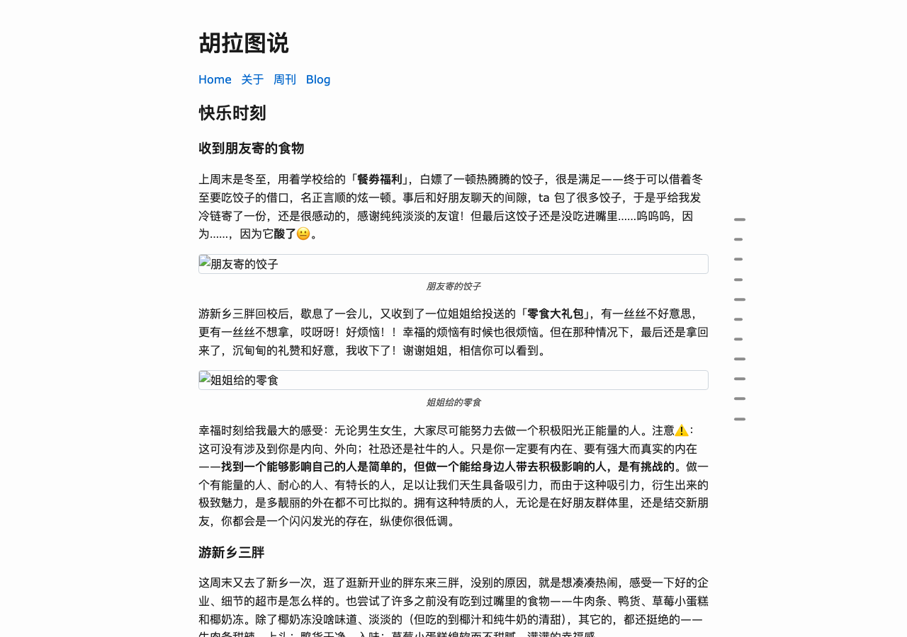
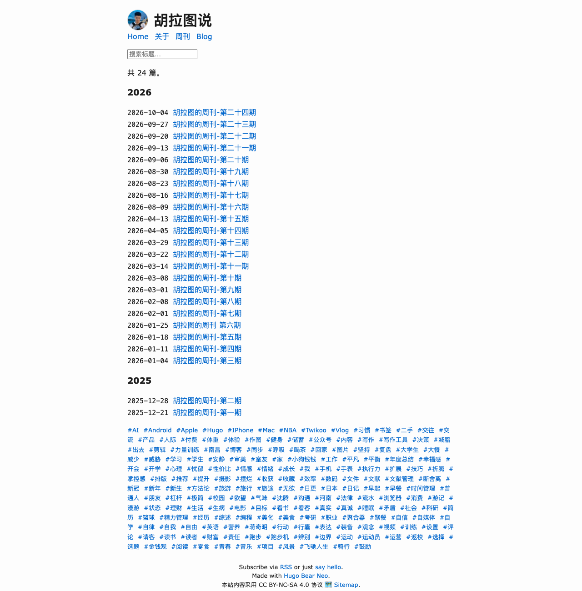
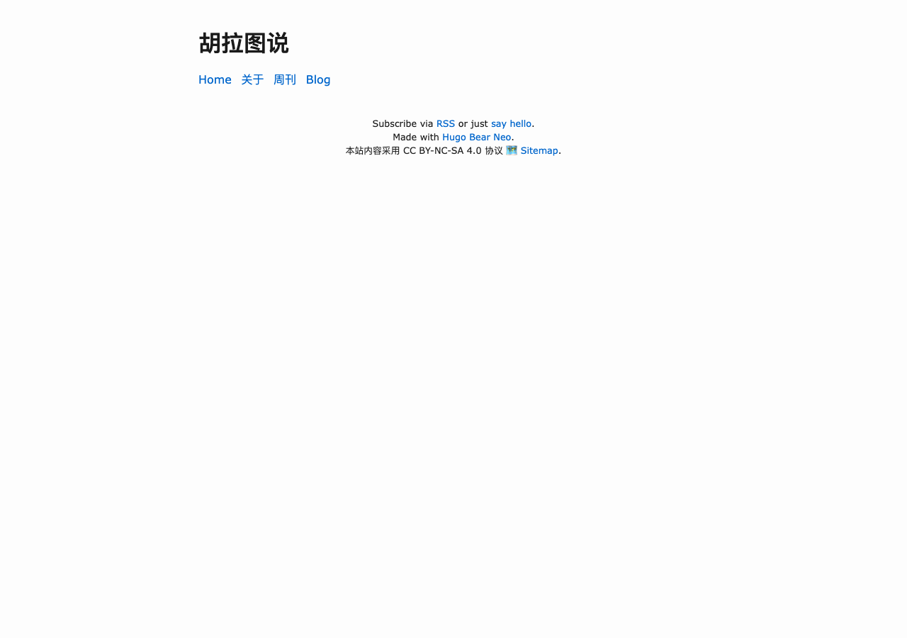
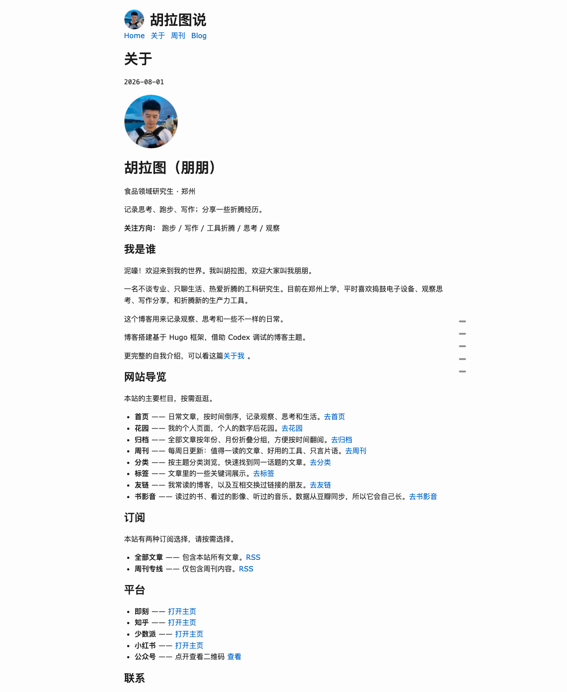
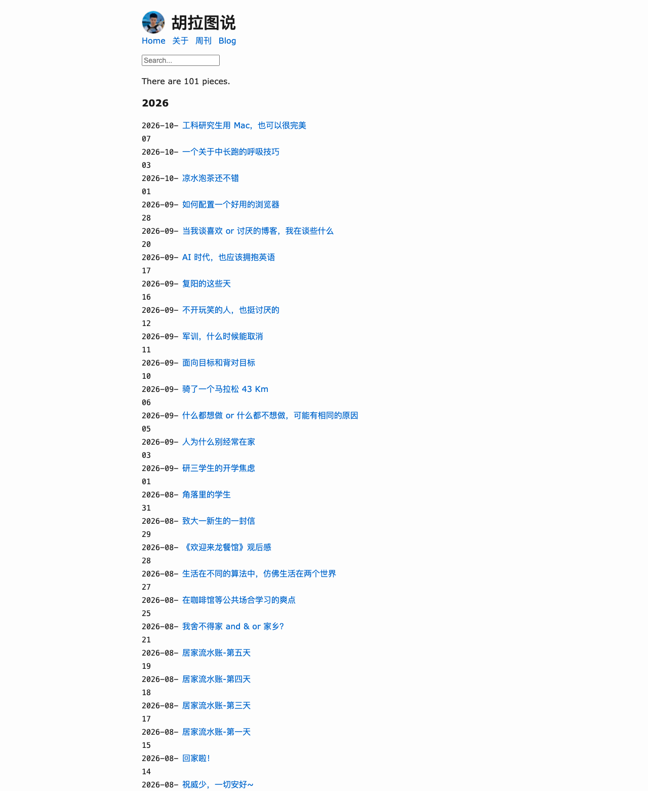
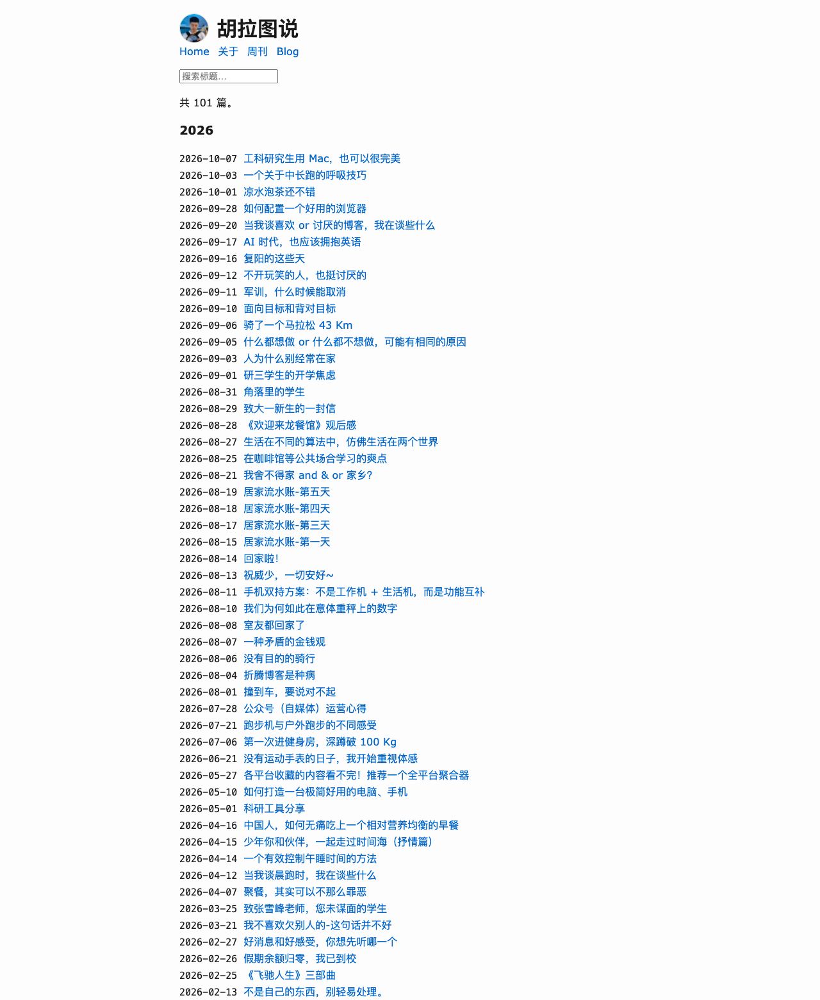
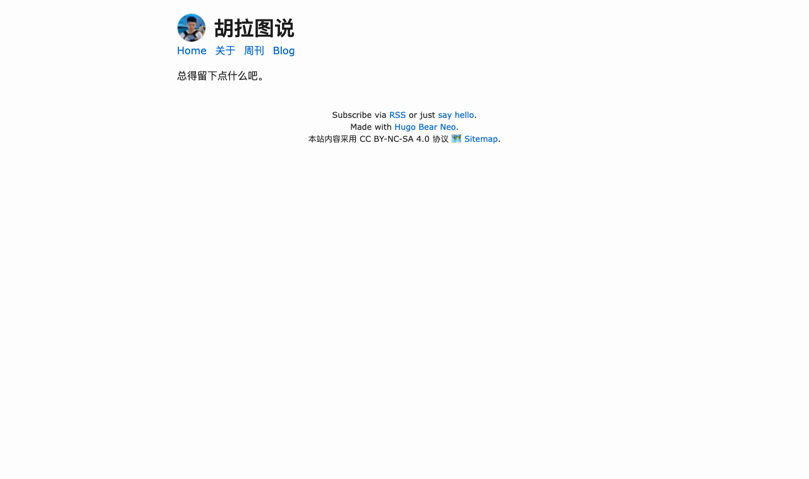
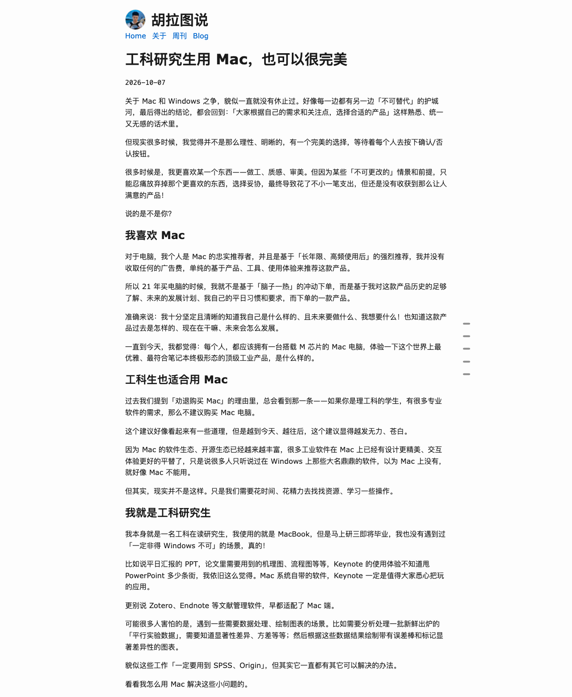
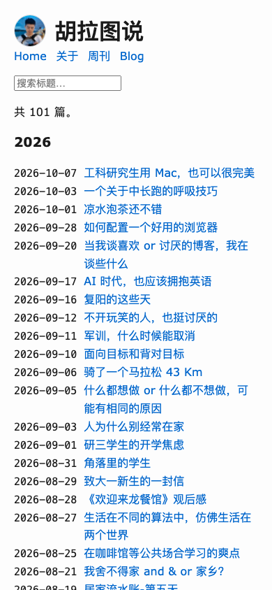
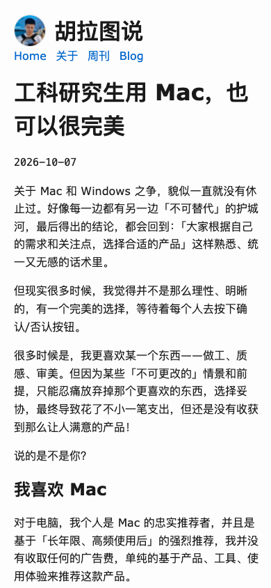

hulatu.com → hugo-bearneo · 迁移试运行 · 2026-10-09
我没有只做推演 —— 在 ~/bearneo-trial/ 真的建了一个站：上游主题原样克隆（git clone 下来的 28 个文件，一行没改），
你的内容搬进去，构建、起服务、用真浏览器截图。下面每一张图都是这个站真渲染出来的，不是示意图。
同一个内容、同一台机器、同一个 Hugo（v0.167.0 extended），两个站各构建一次：
| 指标 | 现在的站（自建主题） | 上游 Bear Neo | |
|---|---|---|---|
| 构建页面数 | 334 | 329 | 少 5 页 |
| 分页页 | 12 | 0 | 上游不做分页，全量单页列出 |
| 构建耗时 | 321 ms | 284 ms | 同级 |
| 构建警告 | 0 | 0（改完 10 个文件后） | 原样是 3 条 |
| HTML 产物 | 343 | 325 | — |
| RSS feed | 3 | 198 | 原样；收敛后 3 |
| 页面 | 现在 | Bear Neo | 倍数 |
|---|---|---|---|
| 首页 | 18.7 KB | 4.2 KB | 4.4× |
| 关于 | 22.8 KB | 5.5 KB | 4.1× |
| 文章页 | 32.5 KB | 11.6 KB | 2.8× |
差距主要来自两件事：现在的站每页内联一份 39 KB 的 critical-post.css（gzip 8 KB，含 Chroma 高亮），
外加 site-core-post.min.css 和 bundle.min.js；而 Bear Neo 的全部样式只有 6.8 KB（gzip 2 KB），
直接内联，一个外部 CSS、一个外部 JS 都没有。切到第二页时现在的站靠缓存追回来一些，
但 Bear Neo 仍然快一倍左右（4.2 / 5.5 / 11.6 KB vs 8.6 / 12.2 / 20.8 KB）。
| 内容 | 现在的位置 | 结果 |
|---|---|---|
| 文章 101 篇 | content/posts/ | ✓ 全进（content/blog/） |
| 周刊 24 期 | content/weekly/ | ✓ 全进 |
| 网站图标 | static/favicon.svg | ✓ 主题直接支持，改一个参数就行 |
| 分享卡图 | static/images/share.webp | ✓ 同样直接支持 |
| 图片资源 | static/images/ 5.7 MB | ✓ 全进（含 og/、media/、donate/） |
| 标签 185 个 / 分类 9 个 | content/tags, categories | ✓ 页面都在 |
| 文章 URL 结构 | /posts/YYYY/MM/DD/slug/ | ✓ 用 [permalinks] 原样保住，外链不断 |
| 头像 | 关于页里，148px | △ 上游没有「头像」这个概念 |
| 关于 | about.md + 109 行自定义布局 | △ 版式没有对应物，只能重写成一篇普通文章 |
| 归档 /archive/ | archive.md + 自定义布局 | ✗ 没迁（上游没有这个概念） |
| 结算 /stats/ | stats.md + 自定义布局 | ✗ 没迁 |
| 书影音 /media/ | media/ + 豆瓣数据 | ✗ 没迁 |
| 友链 /friends/ | friends/ | ✗ 没迁 |
最后四项不是「搬不动」，而是上游主题里根本不存在对应的页面类型 —— 它们全靠你自己写的布局撑着。 要它们回来，等于在 Bear Neo 上再写一遍。
先把主题一行不改、内容直接丢进去，构建是成功的（0 error），页面也长得出来。坏在下面四处。
上游 layouts/_default/single.html 第 2 行是 {{ if eq .Type "blog" }} ——
标题和日期被写死给了名为 blog 的栏目。你的文章在 content/blog/ 里所以没事，
但 24 篇周刊、关于页、隐私页都落在别的栏目，于是它们渲染出来是一上来就是正文，读者不知道自己在看什么、哪天写的。
这不是配置问题，是主题把栏目名当成契约写进了模板。
single.html，把那层条件去掉（改 1 处，其余 127 行原样）

你的 about.md 正文是空的 —— 全部内容都在 front matter 里（about.role、about.intro、
about.site、about.platforms…），由你那 109 行的 layouts/_default/about.html 读出来渲染。
上游没有这个布局，于是它退化成「渲染一个空正文」，页面上除了页头和页脚什么都没有。


上游的日期列是 ul.blog-posts li span.grouped { flex: 0 0 80px } —— 80px 是按它自己的默认日期格式
"02 Jan."（7 个字符）定的。你为了中文站把 dateFormat 换成 ISO 的 2006-01-02（10 个字符），
80px 装不下，于是 101 行列表每一行的日期都断成「2026-10-」/「07」，整个列表高度翻倍。
white-space: nowrap（6 行 CSS，不依赖具体日期格式）

上游的 exampleSite 是直接把分类法关掉的（disableKinds = ["taxonomy"]），所以它从没暴露这个问题：
一旦开着分类法，Hugo 会给每一个词条发一份 RSS。你有 185 个标签 + 9 个分类 →
产物里多了 194 个 .xml（总计 198 个 feed，而现在只有 3 个）。这不是报错，是静悄悄多出来的重复内容。
[outputs] 里把 section / taxonomy / term 都收成 ["HTML"]（5 行配置）另外还有 3 条构建警告，都不致命但得处理：
WARN deprecated: project config key languageCode was deprecated in Hugo v0.158.0 … Use locale instead. WARN deprecated: .Site.LanguageCode was deprecated in Hugo v0.158.0 … Use .Site.Language.Locale instead. WARN Raw HTML omitted while rendering "…/综述写作之-投喂文献（下）.md" ← 你嵌的腾讯视频 iframe 被丢掉了
最后一条值得单独说：那两篇「投喂文献」里嵌的腾讯视频 <iframe> 会被 Goldmark 默认丢掉，
页面上的视频直接消失，只在构建日志里留一行 WARN。得开 markup.goldmark.renderer.unsafe 才留得住。
全部放在站点层（~/bearneo-trial/layouts/），上游主题那 28 个文件一个字节都没改 —— 这是 Hugo 官方的覆盖机制，将来主题升级不会冲突。
| # | 文件 | 改了什么 | 规模 |
|---|---|---|---|
| 1 | hugo.toml | languageCode → locale | 1 行 |
| 2 | hugo.toml | 开 markup.goldmark.renderer.unsafe（保住视频） | 2 行 |
| 3 | hugo.toml | 加 [outputs]，收掉 194 个多余 feed | 5 行 |
| 4 | partials/header.html | 站头加头像（上游只有纯文字 <h1>） | 7 行 |
| 5 | partials/custom_head.html | 头像 CSS + 日期列宽修复 | 48 行 |
| 6 | _default/single.html | 去掉 .Type == "blog" 耦合 | 128 行里改 1 处 |
| 7 | _default/list.html | 5 处英文界面文案中文化 | 104 行里改 5 处 |
| 8 | _default/baseof.html | .Site.LanguageCode → .Language.Locale | 47 行里改 1 处 |
| 9 | _default/rss.xml | 同上（RSS 里的 <language>） | 1 行 |
| 10 | index.html + content/about.md | 修首页重复标题；关于页重写成 markdown | 4 行 + 全文 |
上表第 1～3、8、9 项本质是同一件事：上游主题写于 Hugo 0.158 之前，
用的 languageCode / .Site.LanguageCode 已经被弃用。现在只是警告，
但将来 Hugo 移除它的时候，这个主题会直接构建失败 —— 而它还没跟进。这是选上游主题要认下的风险。
第 7 项值得单说：上游把界面文案硬编码成英文，主题没有走 i18n，所以
There are 101 pieces. / Search... / Filtering for "AI" / Remove filter
这几句只能整份覆盖模板才能改。改完是「共 101 篇。」「筛选：AI」「取消筛选」。

这是迁移里最需要你拍板的一处结构差异：你现在打开 hulatu.com 就是文章列表；
Bear Neo 的首页只有一句话，文章要点一下 Blog 才看得到。要么接受多一次点击，要么覆盖首页模板把列表搬回来。



截图说明：页面里的插图显示成破图，是截图环境的限制 —— 无头浏览器进程访问不到外网的 img.hulatu.com
（命令行里 curl 同一张图是 HTTP 200 / 67 KB）。这不是迁移问题，你本地打开是正常的。
这一节比上一节重要。上面那些是「修一修就好」，下面是修起来要重新写一遍的东西。
| 能力 | 现在 | Bear Neo | 要回来的成本 |
|---|---|---|---|
| 站内搜索 | 全文索引 + 快捷键 + 最近搜索 | 只有列表页的标题过滤 | 高 —— 得自带 search-index.json + 面板 |
| 归档页 | /archive/ 按年月折叠 | 没有 | 中 —— 要写布局 |
| 结算页 | /stats/ 篇数字数里程 | 没有 | 中 |
| 书影音 | /media/ 豆瓣同步 | 没有 | 高 |
| 友链 | /friends/ | 没有 | 中 |
| 系列 | 22 篇带 series | 没有 | 中 |
| 评论 | giscus（100 篇开了） | 没有 | 中 |
| 深浅色手动切换 | 页头按钮 | 只有跟随系统 | 中 |
| 阅读进度条 + 回顶 | 125 个页面有 | 没有 | 低 |
| 打赏块 | 关于页 | 没有 | 低 |
| 44px 触控命中区 | 全站实测达标 | 未做 | 中 —— 要重做一遍实测 |
孤行保护 / text-autospace | 有 | 没有 | 低 |
| 每篇文章的 OG 图 | 101 张自动生成 | 只有一张 share.webp | 中 |
| 深色令牌系统 | 完整（L* 分级） | 10 个变量 | — |
| CSS 长缓存策略 | 外链 + 内容哈希 | 每页内联，不可缓存 | — |
顺带一提：content/blog/_index.md 里的 noindex: true 在上游也是失效的 —— 主题不认这个参数，
所以那个「Hugo 自动生成、和归档高度重叠」的栏目页会重新变成可索引。
还有一个不那么显性的收益：你现在这套 critical.css / critical-post.css / core.css
四层拆分，是为了在「先出首屏、再异步补全」和「维护成本」之间找平衡。Bear Neo 用一个 6.8 KB 的
<style> 把这个问题消掉了 —— 不是解决了，是问题不存在了。
值得换。你会得到一个 28 文件、能通读、上游在维护、页面轻 3～4 倍的站。 代价是上面那张表里的 15 项能力 —— 但其中真正天天用的是搜索、归档、评论三样， 其余大多是「有很好，没有也行」。
不太值得。你现在的站已经不是「Bear Neo + 配置」了 —— 它是一套围绕你内容长出来的东西： 关于页的名片版式、结算页、书影音、系列的折叠、101 张 OG 图、44px 的命中区实测、孤行保护。 搬过去之后要恢复这些，等于在 Bear Neo 上把你的站重写一遍，而且每一样都要重新跟上游的极简假设打架。
你上一轮定的是「做成更强大的主题 BearPro」，这一轮说「算了，直接用这个主题」。 从这次试运行看，这两句话其实是同一个问题的两端： 你真正舍不得的不是主题，是那 15 项能力。
custom_head.html / custom_body.html 两个覆盖钩子的思路。